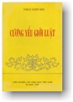

|
BuddhaSasana Home Page |
Vietnamese, with Unicode Times font |
|  |
Cương Yếu Giới Luật Hòa thượng Thích Thiện Siêu |
|
Phụ Đính [II] BỒ-TÁT GIỚI B ồ-tát giới là thông giới, khác với Tỳ-kheo giới là biệt giới. Bồ-tát giới thì chỉ cần nghe hiểu là thọ được, còn Tỳ-kheo giới thì phải lục căn hoàn bị mới thọ được.Bồ-tát dịch từ chữ Buddhisattva (Buddhi: giác ngộ; sattva: hữu tình, chúng sinh, tức một chúng sinh có thể giác ngộ thành Phật). Trong kinh Phạm Võng nói: "Nhất thiết chúng sinh giai hữu Phật tính. Nhữ thị đương thành Phật, ngã thị dĩ thành Phật, thường tác như thị tín, giới phẩm dĩ cụ túc". Hết thảy chúng sinh đều có thể thành Phật. Ta là Phật đã thành, các ngươi là Phật sẽ thành. Ai mà tin ở điều đó thì giới phẩm đã thành tựu rồi, còn về giới tướng là để thực thi tâm Bồ-đề này mà thôi. Giới Bồ-tát được nói trong Phạm Võng. I. Phạm Võng. Vì sao gọi là Phạm Võng? Vì Phật nhìn lên trên lưới của trời Đế-thích như cái võng có nhiều mắc. Chính lưới có mắc ấy nó đang chiếu phản ánh lẫn nhau thành vô tận. Kinh Hoa Nghiêm ví cho lý trùng trùng duyên khởi cũng như lưới Đế-thích. Một mặt gương phản chiếu ánh sáng qua trăm ngàn cái gương khác. Trăm ngàn cái gương khác chiếu lại trong một cái gương này, như vậy là trùng trùng vô tận, không biết bao nhiêu cái gương, bao nhiêu ánh sáng chiếu qua chiếu lại; nhân đó Phật nói kinh Phạm Võng. Kinh này ý nghĩa đồng như kinh Hoa Nghiêm, gồm 61 phẩm. Phẩm Bồ-tát tâm địa giới là do Ngài La-thập dịch. II. Tâm địa giới. Thế nào là tâm địa giới? 1. Pháp môn thì nhiều nhưng không ra ngoài tâm. Cho nên nêu tâm là nêu đủ các pháp. Tâm là bổn nguyên của thánh và phàm. Ngộ được bổn nguyên đó là thành Phật, thành Bồ-tát; không ngộ thì thành chúng sinh lưu chuyển. Bồ-tát vốn ngộ tâm đó cho nên mới thọ Bồ-tát giới này và y theo giới tâm địa mà làm. Nhân thì giống như đại địa. Đại địa có hai tính cách: a. Muôn vật muôn thú từ nơi đó mà phát sinh; muôn giới muôn đức cũng từ đó mà phát sinh. b. Tâm Bồ-tát như đất, không phân biệt tịnh uế; đổ nước hoa cũng được, nước thối cũng xong, với một tâm bình đẳng với tất cả chúng sinh; ai khen cũng được, ai chê cũng không sao, cốt làm thế nào tự lợi lợi tha, không vì tiếng tốt xấu khen chê mà bỏ mất tự lợi lợi tha. Tâm Bồ-tát cũng như đất, không có hiềm chuyện tốt xấu, khen chê, sạch nhớp nên gọi là tâm địa. Phẩm này có hai phần thượng và hạ. Phần thượng là hóa thân đức Thích-ca hỏi đức Lô-xá na, do nhân duyên gì mà Bồ-tát thành tựu được Thập địa, Đẳng giác, Diệu giác Phật? Ngài Lô-xá-na vì đại chúng mà nói: Thập phát thú tâm, Thập trưởng dưỡng tâm, Thập hồi hướng tâm. Thanh văn có 4 quả: Tu-đà-hoàn, Tư-đà-hàm, A-na-hàm và A-la-hán. Còn Bồ-tát biệt giáo thì có 52 vị: Thập tín, Thập trụ, Thập hạnh, Thập hồi hướng, Thập địa, Đẳng giác và Diệu giác. 1. Thập tín: Phật dạy: Thập tín chỉ mới là bước đầu, tâm cùng lý hợp, lòng tin đối với lý không có ngại. Ví dụ, đối với lý Tứ đế hay lý "hết thảy chúng sinh là Phật sẽ thành", có những người họ không tin, nhưng đối với chúng ta nghe lý Tứ đế, Phật tính là tin. Trong Bồ-tát, cái lòng tin đó tương đương với Thập tín. Nghĩa là "tâm dữ lý hợp" (tâm của mình đối với lý Tứ đế, Phật tính nó hợp chứ không chống trái). Nói Khổ đế là mình tin, cho đến Tập, Diệt, Đạo cũng đều tin như vậy. Nói cách khác, tâm với lý khế hợp chứ không chống trái nhau. "Tâm dữ lý hợp" chứ không có nghi ngờ gì hết. Đó là bước đầu để "tùng phàm nhập thánh". Trong kinh Hoa Nghiêm nói: "Phật pháp như biển cả, do lòng tin mà được vào" (Phật pháp như đại hải, do tín năng nhập). Lòng tin đó là bước đầu tiên để đi lên bậc thánh. Đối với lý Tứ đế thì có tin mới học, mới tu. Có tin rồi mới giải, mới hành, mới chứng; nếu không tin thì tìm hiểu lý Tứ đế làm gì; nếu không hiểu thì làm sao mà tu,. không tu thì làm sao mà chứng? Cho nên phải tin. Tin là bước đầu tiên để vào đạo. 2. Thập trú: Khi đã tin thì khởi tâm quyết liệt, dứt khoát để đi vào diệu đạo. Do tâm dứt khoát nên lòng tin đứng yên, bất động không xao lãng nên gọi là trú. Thập trú trong Phạm Võng có một từ khác là Thập phát thú, Thập giải; tức là mười lòng tin hướng tới đạo. 3. Thập hạnh: Từ Thập trú bước lên Thập hạnh, mà Thập trụ đã là Phật tử rồi, bởi lòng tin đã đứng yên lrên lý của Phật rồi. Như vậy là đã đầy đủ phần tự lợi, nhưng còn phải hướng tới phần lợi tha nữa, nên phải từ Thập lrụ hướng đến Thập hạnh. Hạnh là hành mọi điều thiện để lợi tha. Thập hạnh cũng có một từ khác là Thập trưởng dưỡng. Trưởng dưỡng là gì? Vì lên địa vị này là cứ Tăng tấn tu các điều thiện, làm cho điều thiện Tăng mãi lên, gọi là trưởng dưỡng. Tức mười bậc trưởng dưỡng các hạnh lợi tha, để từ đây bước lên Thập hồi hướng. 4. Thập hồi hướng: Trong Phạm Võng cũng có một từ khác là Thập Kim cang, kiên cố bất động; cũng gọi là Thập nguyện. Ở Thập tín, Thập hạnh, tâm muốn thoát tục thì nhiều, nhưng tâm đại bi, lợi tha thì ít. Đến Thập hồi hướng là hướng tâm thoát tục trở về với tâm đại bi lợi tha để hòa quang đồng trần, cứu độ chúng sinh, lợi lạc hữu tình. Chữ "hồi hướng" là hồi chơn hướng tục--Khi kia tâm xuất tục là hồi tục hướng chơn, bây giờ hồi chơn hướng tục, tức là từ nơi tâm xuất tục nhiều, hướng nó về cái tâm đại bi, lợi tha nhiều hơn nữa. Hồi trí hướng bi-- khi kia là nặng về trí, bây giờ hướng về bi. Trí là tự lợi, bi là lợi tha. Trí là chứng Bồ-đề, bi là lợi tha. Bây giờ hồi trí hướng bi, chơn tục viên dung, bi trí bất nhị, đầy đủ thần thông; đến địa vị này gọi là hồi hướng, tức là hồi chuyển mười thiện hạnh hướng tới ba chỗ: a. Hướng tới chơn như thật tế (lý), tức hồi sự hướng tới diệu lý. b. Hướng tới Vô thượng Bồ-đề (hướng tới trí giác), (bên kia là lý, bên này là trí, nhưng trí Vô thượng), tức hồi nhân hướng quả. c. Hướng tới tất cả chúng sinh, tức hồi tự hướng tha. Đó l à bốn gia hạnh. Qua khỏi Thập hồi hướng là tu bốn gia hạnh: Noãn, Đảnh, Nhẫn, Thế đệ nhất. Thập địa -- cuối Thế đệ nhất, đoạn trừ kiến hoặc, chứng lý Nhị không, bước lên Kiến đạo sở hoan hỉ địa, tu tập thành tựu Giới Ba-la-mật. Tiếp theo là Ly cấu địa, từ kiến đạo vị tiến lên địa này, y theo chơn lý nhị không đã chứng được mà tu tập đoạn trừ tu hoặc, cho đến địa thứ mười là Pháp vân địa, tất cả vô minh lậu hoặc hai chướng hiện hành và chủng tử đều dứt sạch, thành tựu trọn vẹn mười Ba-la-mật, đủ vô biên công đức, như đám mây lđn, mưa pháp cam lồ tưới mát chúng sinh. (Xem rõ Mười địa trong luận Thành duy thức). Bồ-tát tâm địa giới phẩm thượng -- nói cách khác, ở Bồ-tát tâm địa giới phẩm thượng thuyết minh về hàng Bồ-tát do sức định tuệ tu chứng tam hiền, thập thánh. Còn ở Bồ-tát tâm địa giới phẩm hạ là thuyết minh thập trọng tứ thập bát khinh giới, để cho hàng Bồ-tát y theo tâm địa giới đó mà tu tập Giới, Định, Tuệ. Thành ra. thượng phẩm chỉ cho quả vị Bồ-tát tu chứng tam hiền thập thánh--còn phẩm hạ chỉ về thánh nhân, tức chỉ về giới; tức phẩm hạ nói về nhân, phẩm thượng nói về quả.Kết luận: Học giới là để cho chúng ta thấy có những lời dạy của Phật rất hay để mà tu thân, khẩu, ý. Ví dụ, Phật dạy những lời "ác sự hướng tự kỉ, hảo sự dữ tha nhân"; hoặc "Không được khen mình chê người" thật đơn sơ nhưng rất cao thượng và khó thực hành. Chúng sinh thì luôn luôn vị ngã, có khi không tán thán mình một cách trực tiếp, nhưng tự tán thán mình bằng cách hủy tha, khẩu xuất đao kiếm, chê tất cả, trừ mình. Học như vậy để biết ai giữ giới ai không, ai tu ai không tu. Nếu không nhờ những lời dạy ấy, ta dễ trở nên người nhỏ mọn, hẹp hòi. Khen mình, chê người là chuyện rất dễ làm, nhưng so với đạo lý là thật còn rất xa, đó là làm theo hạnh chúng sinh chứ không phải theo Phật, Bồ-tát. III. Tam tịnh giới. Giới Bồ-tát gồm trong ba tụ tịnh giới là: Nhiếp luật nghi giới, Nhiếp thiện pháp giới và Nhiêu ích hữu tình giới. Một là gom tất cả gọi là "nhiếp". Nếu có luật nghi gì thì luật này đều gom hết, gọi là Nhiếp luật nghi giới. Hai là nhiếp thiện pháp giới, là có bao nhiêu điều thiện thì giới này gom hết; lục độ vạn hạnh đều nằm trong đó. Ba là Nhiêu ích hữu tình giới. Nhiếp luật nghi là "chư ác mạc tác", đoạn tất cả ác. Nhiếp thiện pháp là "chúng thiện phụng hành". Nhiêu ích hữu tình là lợi lạc chúng sinh. Hai việc nhiếp luật nghi và nhiếp thiện pháp cũng lợi lạc chúng sinh nhưng gián tiếp, tiêu cực, còn lợi lạc hữu tình là trực tiếp, tích cực. Ví dụ, không sát sinh thì cũng lợi lạc chúng sinh, nhưng phóng sinh còn hơn thế, hợp với câu kệ "tự tịnh kỳ ý". Không làm ác cũng là tự tịnh kỳ ý nhưng còn thấy có người có ta nên chưa rốt ráo, phải đến chỗ "tam luân không tịch", theo tinh thần kinh Kim-cang mới là tự tịnh kỳ ý. Nếu không có tinh thần đó thì rất dễ chán. Khi phát tâm độ chúng sinh mà chúng sinh bạt tai mình, làm sao chịu nỗi sự ngang ngược ấy! Cũng là bố thí nhưng với tinh thần khác nhau nên kết quả cũng khác nhau. Một câu kệ cũng đủ tam tụ tịnh giới, đủ theo đó để tu hạnh Bồ-tát. Hoặc như bốn hoằng thệ nguyện, thì "Chúng sinh vô biên thệ nguyện độ" là Nhiêu ích hữu tình giới. "Phiền não vô tận thệ nguyện đoạn" là đoạn nhất thiết ác, là Nhiếp luật nghi giới. "Pháp môn vô lượng thệ nguyện học" là tu nhất thiết thiện, là Nhiếp thiện pháp giới. Như vậy, bốn hoằng thệ nguyện cũng là ba tụ tịnh giới; đó là giới thể. Còn gọi là giới tướng thì phải là 10 giới trọng, 48 giới khinh như trong kinh Phạm Võng. IV. Thọ giới Bồ-tát. Có hai cách thọ: Một là tự thệ thọ, là đối trước Tam Bảo phát bốn tâm tịnh tín, đối với Phật, Pháp, Tăng và giới thanh tịnh bất hoại. Lòng tin thành tựu viên mãn (tứ bất hoại tín) và cầu Phật gia hộ, khi thấy tướng hảo thì đắc giới. Hai là tùng sư thọ, là do thầy truyền thọ giới Bồ-tát truyền lại. V. Mất giới Bồ-tát. Sau khi thọ giới, trường hợp mất giới Tỳ-kheo là do năm nhân duyên: Chết, đổi hình (nam thành nữ hay ngược lại), không tin nhân quả (đoạn thiện căn), tác pháp (nói ra lời "tôi không tu, không làm Tỳ-kheo nữa" với bất cứ người nào nghe, hiểu được và phạm trọng). Bồ-tát giới thì chỉ có hai trường hợp mất giới là phạm trọng do thượng phẩm phiền não trói buộc (ví dụ, cố ý sát nhân mà tâm niệm hành động sát nhân hiện hành liên tục không biết tàm quý, đó là thượng phẩm phiền não). Còn có trường hợp gọi là "ô trọng giới", như ngộ sát, thì không đến nỗi mất giới. Trường hợp hai là xả Bồ-đề tâm, ví dụ nói: "Tôi không tin việc làm Phật, không phát tâm Bồ-đề nữa". Bồ-tát mệnh chung không mất giới, vì phát nguyện thọ từ kim thân cho đến Phật thân, trừ có hai duyên cớ mất giới như đã nói trên. (Chú thích: Khai đạo giới tử thọ Cụ túc giới năm 1970) [III] BỒ-TÁT DANH VÀ THIỆT T hiện Sanh thưa: "Bạch đức Thế Tôn, Phật dạy có hai hạng Bồ-tát: một là giả danh Bồ-tát, hai là thiệt nghĩa Bồ-tát".1. Thế nào là giả danh Bồ tát? Thiện nam tử, nếu chúng sinh đã phát Bồ-đề tâm rồi, lại còn ưa lãnh thọ, đọc tụng, ngợi khen, nhớ nghĩ các kinh điển, pháp thuật của ngoại đạo, và lấy pháp ấy mà giáo hóa chúng sinh; hoặc chỉ vì thân mạng mình, vui trong đường sinh tử mà không sát hại sinh mạng kẻ khác, tạo các ác nghiệp thì không tránh khỏi quả khổ tương lai; không ưa tu từ bi, đối với Tam Bảo lòng sinh nghi ngờ, không chánh tín, quý mến tự thân, không biết nhẫn nhục, ăn nói sổ sàng, hối hận, buông lung không thể chứng đặng Bồ-đề, e sợ phiền não mà không cố gắng siêng năng tu tập các phiền não phá hoại kiết sử; tâm hay tham lam, ganh tị, giận hờn, gần gũi bạn ác, đắm chìm trong vô minh, không tin lục độ, không ưa tu phước, không quán rõ lỗi lầm của sinh tử và ưa thọ trì những lời hung dữ của Bồ-tát. Như thế gọi là giả danh Bồ-tát. Và những chúng sinh đã phát tâm Bồ-đề, mong đặng Vô thượng Chánh đẳng chánh giác, nhưng khi phải khổ hạnh tu hành trải qua vô lượng kiếp rồi mới đắc đạo, thì sinh lòng thối chí, tuy có hành đạo mà tâm không chơn thật, không tàm quý, không thương xót, hay theo ngoại đạo hại sinh mạng để tế trời, dẫu có chút lòng tin nhưng không vững chắc, đắm say ngũ dục, gây nhiều điều ác, ỷ sắc lực, tài của, lòng kiêu mạn làm việc điên đảo, không biết lợi ích cho người; vì cái vui trong sinh tử mà bố thí; vì cái vui trong cõi trời mà thọ trì cấm giới; và vì thọ mạng lâu dài mà tu thiền định. Như thế gọi là giả danh Bồ-tát. 2. Thế nào là thật nghĩa Bồ-tát? Trái lại, thật nghĩa Bồ-tát là biết gần gũi cúng dường sư trưởng, cha mẹ, thiện hữu, thọ trì đọc tụng mười bộ kinh của Như lai; vì Phật pháp mà không tiếc thân mạng, tài sản; không tự khinh rẻ mình, dang tay làm việc bố thí không tiếc thân mạng; thường dồi mài trí tuệ; tuy học ngoại điển nhưng cốt để phá các tà kiến và thắng các tà kiến; khéo biết phương tiện để điều phục chúng sinh; siêng tu tinh tấn, khi rẻ phiền não, làm cho chúng không được tự do, về cõi Niết-bàn; giữ gìn tinh tấn, cứu hết thảy khổ não; quán rõ hết thảy tội lỗi sinh tử, tín tâm bền chắc, tu lập từ bi mà không trông cầu quả báo; từ bi đối với ke oán người thân, tâm vẫn không hai; khi bố thí vẫn bình đẳng, khi xả thân cũng bình đẳng; biết tướng vô thường không tiếc thân mạng, biết rõ thế đế nên tùy thuận chúng sinh; khi ít của cải thì cấp cho người nghèo cùng trước, rồi sau mới cho người phước điền; trước vì người nghèo khổ, sau mới vì người giàu có; thường khen việc lành của người và khai thị cho họ vào Niết-bàn; có kỹ nghệ gì đều muốn cho họ học, và thấy học hơn mình thì sinh lòng vui mừng, chẳng hề vì mình; thường vì người khác. Như thế là thiệt nghĩa Bồ-tát. (Lược dịch trong kinh Bồ-tát U-bà-tắc-giới 1950) [IV] XUẤT GIA HOẰNG PHẬT ĐẠOCác giới tử, C ác vị có biết hiện tại chúng ta đang ở đâu không? Các vị có nghĩ rằng chúng ta sắp làm gì không? Đây không phải là một đại trai đàn làm chay, cũng không phải là nơi hội họp thường lệ, mà đây là đại trai đàn Thiện Hòa và các vị đến đây để lãnh thọ Giới pháp của Phật. Đó là một điều hết sức quan trọng đối với đời xuất gia của các vị, mà cũng hết sức quan trọng đối với Phật pháp.Là một người xuất gia, không phải ra khỏi nhà thế gian đến ở chùa là đủ. Nếu ra khỏi nhà thế gian đến ở chùa, thì chỉ mới xuất được thế tục gia, nhưng còn hai điều quan trọng khác là xuất phiền não gia và xuất tam giới gia chưa thành tựu được. Khi chưa thành tựu hai điều sau này thì điều xuất gia trước không có công đức và giá trị bao nhiêu! Bởi vì, có nhiều người dầu "đầu tròn, áo vuông", nhưng họ là những người đến ở chùa làm công quả, và nếu căn cứ theo hình thức thì những vị đó cũng có thể gọi là xuất gia được, nhưng đó chỉ là xuất thế tục gia mà thôi. Cho nên, muốn xuất phiền não gia, xuất tam giới gia thì phải thọ trì giới pháp của Phật. Là Phật tử, dù lại gia hay xuất gia, có hai điều cơ bản này mới thành một người Phật tử, đó là chánh kiến và tịnh giới. Người tại gia thọ trì Tam quy -- tin Phật, tin Pháp, tin Tăng một cách đúng đắn, sâu sắc, bền vững, kiên cố thì họ thành tựu được chánh kiến. Một người tại gia khi đã quy y Tam Bảo và thọ trì ngũ giới, giữ gìn năm điều luật giới tại gia của Phật chế là thành tựu được tịnh giới. Người tại gia thành tựu được chánh kiến và tịnh giới thì mới gọi là đệ tử của Phật, còn nếu không thành tựu, thì dầu xưng là Phật tử cũng chưa phải là Phật tử đúng nghĩa. Tại gia đã vậy thì xuất gia cũng vậy, cũng phải có hai điều kiện cơ bản đó, là chánh kiến và tịnh giới. Thành tựu chánh kiến thì người xuất gia, người tại gia đều y như nhau, đều lấy Tam Bảo làm thầy; tôn thờ Phật, tôn thờ Pháp, tôn thờ Tăng làm lý tưởng cao cả của cuộc đời mình; nhằm vào đó, hướng vào đó làm mục đích để bước tới. Đó là thành tựu chánh kiến. Khi đã thành tựu chánh kiến, họ phải thành tựu tịnh giới. Nếu không thành tựu tịnh giới thì người xuất gia không thành người xuất gia. Giới tại gia có 5 giới; giới xuất gia Sa-di có 10 giới, Tỳ-kheo có 250 giới, Tỳ-kheo-ni có 348 giới. Đó là những pháp do Phật qui định cho người đệ tử của Phật. Khi muốn làm đệ tử Phật trong hàng xuất gia, phải thành tựu giới pháp tịnh giới thì mới trở thành được một người xuất gia đúng nghĩa. Các vị hôm nay đã ở chùa nhiều ngày, nhiều tháng, nhiều năm, tức đã thành tựu được xuất thế tục gia. Và ngày mai các vị bước lên giới đàn để thọ trì giới pháp của Phật, để mong thành tựu được xuất phiền não gia, xuất tam giới gia, bấy giờ mới trọn vẹn chí nguyện xuất gia của mình. Cho nên từ giờ phút này, giờ phút sắp đến đâỳ là giờ phút hết sức quan trọng đối với đời xuất gia của các vị, mà cũng hết sức quan trọng đối với Phât pháp. Nếu các vị không thọ giới pháp, tức là các vị không hoàn thành được người xuất gia đệ tử Phật, không hoàn thành được một vị Sa-di, không hoàn thành được một vị Tỳ-kheo. Tự mình không hoàn thành Sa-di, Tỳ-kheo thì không thể gọi là xuất gia. Khi đã không trở thành người xuất gia thì không thể đảm đương Phật pháp, hoằng dương Phật pháp, bấy giờ Phật pháp cũng không hoàn thành được. Cho nên sự thọ giới này chẳng những quan trọng đối với đời sống cá nhân của các vị, mà cũng là quan trọng đối với Phật pháp. Như trong Luật, đức Phật đã dạy: "Khi nào, ở đâu mà còn có 10 thầy Tỳ-kheo truyền thọ giới, hoặc có 5 thầy cùng nhau truyền thọ giới pháp, thì bấy giờ Phật pháp tồn tại. Tỳ-ni tạng trụ, Phật pháp diệc trụ". Hễ Tỳ-ni tạng còn đương trụ, nghĩa là còn có người truyền giới và còn có người giữ giới, thì tức nhiên giới luật còn; giới luật còn tức nhiên Phật pháp còn. Cho nên, việc thọ giới là một việc hết sức quan trọng. Vì vậy, trong giờ phút này, các vị nên xét lại tâm nguyện của mình, hãy phát một lòng hết sức chí thành chí kính, xả bỏ tất cả, quên hết tất cả những gì làm chướng ngại việc thọ giới, để hướng vào việc thọ giới. Tâm của các vị được như vậy thì giới pháp, giới thể mới thành tựu trọn vẹn, viên mãn ở nơi các vị. Nếu tâm các vị không được như thế, không chí thành chí kính, không thấy đây là một điều quan trọng cho cá nhân xuất gia của mình và cho Phật pháp, thì dầu các vị có ở trước Thập sư, có dạ, có thưa thì không thể làm sao tròn được giới thể ở nơi các vị. Cho nên, trước khi các vị đăng đàn lãnh thọ giới pháp, các vị hãy gạn lọc tâm tư, xét lại lòng mình, phát một lòng tin hết sức dõng mãnh, tinh tấn đối với giới pháp, các vị mới lãnh thọ viên mãn được. Nhưng vì sao các vị phải lãnh thọ giới pháp? Đức Phật dạy: "Giới luật của Phật có những công đức hết sức lớn lao". Trong Luật đức Phật đã nêu lên 10 điều ích lợi để cho các đệ tử thấy rằng; các điều luật Phật chế không phải là chế suông, không có ý nghĩa; mà trái lại nó rất có ý nghĩa, rất có lợi ích cho những ai phát tâm muốn thọ trì. Mười điều đó là gì? Theo Luật gọi là 10 cú nghĩa. Nghĩa là 10 điều ích lợi. Điều ích lợi thứ nhất: Nhiếp thủ ư Tăng. Có thọ trì giới luật mới được nhiếp thủ vào nơi Tăng đoàn. Có thọ trì giới luật mới được Tăng đoàn của Phật nhiếp trì cho. Nếu một người ở chùa chục năm, hai chục năm... mà không thọ giới thì vẫn là người cư sĩ, hoặc thọ giới Sa-di vẫn là Sa-di, chứ không thể gọi là Tỳ-kheo được Khi có thọ giới Tỳ-kheo mới nhiếp thủ vào Tăng đoàn, mới nhập vào Tăng số để trở thành một trong ba ngôi Tam Bảo, trở thành một vị chúng trung tôn. Cho nên giới pháp chính là cái để dắt dẫn chúng ta đi vào với Tăng đoàn, đi vào với ngôi vị chúng trung tôn. Thế nên, điều ích lợi của giới pháp là làm cho người xuất gia thọ giới được nhiếp thủ ư Tăng. Điều ích lợi thứ hai: Linh Tăng hoan hỉ (Khiến Tăng hoan hỉ). Các điều giới của đức Phật chế ra làm cho người thọ trì được hoan hỉ. Một người thọ giới, người khác thọ giới, khi đã thọ giới Tỳ-kheo của Phật rồi, dầu người thọ giới mới một năm, hai năm, ba năm, cho đến người thọ giới 80 năm đi nữa, thì cũng đều có một Tăng thể giống như nhau. Cho nên mỗi lần Bố-tát, ở giữa chúng Tăng gọi là Đại đức Tăng. Đại đức Tăng là tiếng gọi toàn thể chung, chứ không phân biệt ông Tăng 70 hạ, 50 hạ, 40 hạ hay ông Tăng mới thọ giới. Dù người mới thọ giới cũng đều nằm trong Đại đức Tăng, không phân biệt gì hết, bởi vì giới thể là một--250 giới là một đối với Tăng, 348 giới là một đối với Ni. Khi một người đã thọ giới và giữ giới như vậy, tất nhiên ai thấy cũng vui mừng, hoan hỉ. Như một người đi tu mà thấy người khác đi tu như mình thì lấy làm hoan hỉ. Khi thọ giới rồi, cố gắng giữ giới, người này thấy người kia giữ giới thanh tịnh, hoan hỉ, người kia thấy người này giữ giới được thanh tịnh thì cũng hoan hỉ. Đó là một sự hoan hỉ trong giới luật, thấy được sự tiến bộ trong vấn đề tu trì của nhau, chứ không phải là một sự hoan hỉ vì thấy nhau làm những điều sai trái. Cho nên khi thọ giới rồi phải cố gắng tôn trọng giới, quý trọng giới, ai giữ được chừng nào thì công đức lớn lao chừng đó; nếu ai vì nghiệp duyên không giữ được nhiều thì người đó đã phạm cái giới của họ. Mặc dầu họ phạm giới, ta không thể khinh họ nhưng cũng không thể hoan hỉ với họ được. Nếu khi thấy một người phạm giới mà mình hoan hỉ theo, tức có nghĩa mình đã phụ họa theo sự phạm giới đó. Đó là sự hoan hỉ của Tăng, đúng nghĩa là một vị Tăng hoan hỉ trước sự thọ trì giới luật thanh tịnh. Điều lợi ích thứ ba: Linh Tăng an ổn (Khiến Tăng an ổn). Giới pháp khiến cho Tăng đuợc an ổn. Tăng nhờ đâu mà an ổn? Khi thấy một người không thọ trì giới thì chính người đó đã có tội lỗi, khi thân, khẩu, ý đã có tội lỗi thì không những không thể an ổn cho chính người đó mà còn làm cho người khác phải khổ lây. Khi trong chúng Tăng, người này giữ giới thân, khẩu, ý được thanh tịnh, an ổn, người kia giữ giới thân, khẩu, ý được thanh tịnh, an ổn, thì sẽ có một chúng hội, một Tăng đoàn mà ai nấy đều sống trong giới pháp thanh tịnh, đều được an ổn như nhau, lấy sự trì giới thanh tịnh mà an ổn, chứ không phải lấy điều hơn thua, điều vật chất, địa vị mà an ổn. Thử hỏi, trong một đám đông từ hai người trở lên, hàng trăm hàng ngàn người mà nếu không có giới luật thì chúng Tăng đó có thể nào an ổn không? Không, chúng Tăng đó sẽ vô kỷ luật, sẽ vô hạnh. Khi chúng Tăng vô kỷ luật, vô hạnh thì chúng Tăng đó sẽ không an ổn; không an ổn cho từng cá nhân cũng như không an ổn cho cả đoàn thể. Cho nên giới của Phật có sự lợi ích thiết thực vô cùng là làm cho chúng Tăng an ổn, an lạc.Điều ích lợi thứ tư: Linh vị tín giả tín (Khiên người chưa tin thì họ phát khởi lòng tin). Chúng ta biết rằng, Tăng là một trong ba ngôi Tam Bảo. Tăng là hình dáng, hình ảnh của Phật ở tại thế gìan. Tăng có trang nghiêm, có thanh tịnh thì bấy giờ Tăng mới thành là một Tăng Bảo; thành Tăng Bảo thì mới là chỗ quy ngưỡng và phát lòng tin cho tín đồ. Nhờ giới pháp mà một vị Tăng được thanh tịnh trang nghiêm, như hình ảnh của đức Phật hiện ra ở giữa thế gian.Đức Phật đ ã diệt độ rồi, xa quá! Cần phải có hình ảnh của đức Phật sống động ở trong một vị Tăng có giới, có tuệ để làm nơi phát lòng tin Tam Bảo cho những người chưa tin. Khi một vị Tăng thanh tịnh hướng dẫn cho những người chưa tin, phát khởi lòng tin thì vị Tăng đó được chúng Tăng quý trọng và tín đồ hân hoan. Trái lại, khi có một vị Tăng không tu hành trang nghiêm, không thanh tịnh, không đứng đắn, thiếu kiến thức, không có lòng chánh tín Tam Bảo, chắc chắn vị Tăng đó sẽ phá hoại lòng tin của kẻ khác. Đối trước một vị Tặng không nghiêm túc, không thanh tịnh thì chẳng những người chưa tin đã không tin, mà người có tin rồi cũng sẽ thối thất.Điều ích lợi thứ năm: Dĩ tín giả linh Tăng trưởng (Những người nào đã tin khiến cho họ được Tăng trưởng). Khi một vị Tăng giữ giới hạnh nghiêm túc, oai nghi đĩnh đạc, ngôn ngữ đàng hoàng, tâm tư rộng rãi, hiểu biết đúng đắn, vị Tăng đó chầc chắn khi người khác nhìn vào phải phát khởi lòng tin, và ai đã tin rồi thì chắc chắn sẽ Tăng trưởng thêm, kiên cố thêm chứ không bị thối thất. Sở dĩ có những tín đồ lúc đầu đến chùa hăng hái tin tường, nhưng thời gian sau bị thối thất, vì lẽ họ gặp chuyện nọ chuyện kia của riêng họ một phần, mà cũng có một phần đáng buồn là họ gặp những vị Tăng không đĩnh đạc, không đàng hoàng; vị Tăng đó chẳng những đã không lợi cho mình mà cũng không có lợi cho tín đồ, có nghĩa là không có lợi ích gì cho Phật pháp. Vậy biết rằng, một vị Tăng giữ giới luật nghiêm trang, thanh tịnh, thì đó là một hình ảnh sống động của đức Phật dẫu không toàn diện nơi thế gian, nhưng cũng đủ là nơi nương tựa cho Phật tử, họ đã tin rồi càng tin thêm, kiên cố vững chắc. Khi tín đồ càng tin Tam Bảo kiên cố vững chắc, thì đó là điều tốt lành để cho Phật pháp được phát huy, tồn tại.Điều lợi ích thứ sáu: Nan điều giả linh điều (Đối với người ương ngạnh, khó điều phục khiến được điều phục). Nếu không có giới thì không biết căn cứ vào đâu mà nói người này có lỗi, người kia không có lỗi, người nọ thanh tịnh, người kia không thanh tịnh...Giới luật là chuẩn mực, là thước đo để đo hành vi, ngôn ngữ, phạm hạnh của mỗi người. Khi đã có giới luật, thì người nào phạm tới đâu xử trị tới đó; lấy giới luật mà xử trị phân minh, rõ ràng. Khi đó dù có ngoan cố, ương ngạnh đến đâu cũng phải bị điều phục. Nếu không điều phục được, thì theo Luật, chúng Tăng sẽ cử tội "mặc tẩn", không cho nhập vào Tăng đoàn nữa. Như vậy, Tăng đoàn sẽ có người nhu thuận, chứ không còn có người ngoan cố, khó điều phục. Điều lợi ích thứ bảy: Linh tàm quý giả đắc an lạc (Khiến người biết tàm quý được an lạc). Ngược với người khó điều phục bị điều phục bằng giới luật, thì người biết tàm quý, giữ gìn từng li từng tí để cho giới luật được trang nghiêm thanh tịnh, khi thấy một lỗi nhỏ cũng hết sức sợ hãi, thì người đó là người biết tàm biết quý. Người biết tàm quý mà giữ giới thì chính họ được thanh tịnh an lạc, cũng là niềm an lạc cho cả chúng. Cho nên, người biết tàm quý mới biết tránh tội lỗi, như trong Luận đã nói: "Có năm thứ thuộc tự tánh ác, đó là tham, sân, si, vô tàm và vô quý". Là năm cái ác tự trong bản tính, năm cái ác gốc gây ra năm cái ác khác làm tai hại cho chúng, cho cá nhân, cho đến gia đình, xã hội. Trong đó vô tàm, vô quý -- nghĩa là không biết hỗ và không biết thẹn, thì chính nó cũng là ác, nằm ngay trong bản thân, đó là cái ác gốc chứ không phải cái ác ngọn. Một người đã không có tâm tàm quý thì người đó phạm cũng không biết phạm; hoặc có biết phạm cũng không lấy làm hỗ thẹn; mà người đã không biết hỗ thẹn thì không thể làm sao giữ gìn giới luật cho thanh tịnh được. Cho nên, người có tàm quý thì dù thấy mỗi một giới nào dẫu nhỏ nhặt tới đâu cũng trang nghiêm giữ gìn không dám phạm, bởi vì phạm thì thấy rất hỗ, rất thẹn. Và như vậy, không phạm thì tất nhiên là tâm được an lạc; an lạc cho mình và an lạc cho chúng. Ngược lại, một người không biết hỗ, không biết thẹn,cứ liều phạm giới, phá giới, chắc chắn người đó không tạo nên an lạc cho mình, cũng không tạo nên an lạc cho chúng. Đ iều lợi ích thứ tám: Đoạn lậu hoặc hiện tại (Nhờ giới luật mà dứt trừ lậu hoặc trong hiện tại). Hữu lậu là gì? Cái gì gọi là hữu lậu? "Lậu" là một tên riêng của chữ "phiền não". Phiền não như tham, sân, si có tính cách rỉ chảy, tươm rỉ ở nơi sáu căn của chúng sinh, làm cho sáu căn của chúng sinh bị ô nhiễm. Nếu khi mắt nhìn là mắt nhìn, thì sự nhìn đó trong sạch; nhưng nếu mắt nhìn mà có lòng tham lam, say đắm trong đó, thì cái nhìn đó trở nên ô nhiễm, trở nên xấu. Tai nghe là tai nghe, nhưng nếu nơi cái nghe đó mà có lòng tham chen vào, thì cái nghe đó trở thành ô nhiễm, trở nên xấu. Miệng nói là miệng nói, lưỡi nếm là lưỡi nếm, thân cảm xúc là thân cảm xúc, nhưng nếu có lòng tham phát sinh nơi cảm xúc đó thì sự cảm xúc đó trở thành nhớp nhúa, ô nhiễm; giống như mụt ghẻ tươm nước ra, phiền não tươm ra nơi sáu căn: thấy, nghe, ngửi, nếm, xúc chạm, ý nghĩ cũng như vậy, cho nên gọi là lậu. Và những thứ đó nó làm cho chúng sinh bị lọt mãi vào trong tam giới không thoát ra được, cũng như nước trong bình lủng giọt xuống, cho nên gọi là lậu. Nói tóm lại, chữ "lậu" là một danh từ khác để chỉ cho phiền não hay chữ "lậu hoặc". Thường thường ở trong kinh Nikàya (kinh tạng Pàli) thì gọi chung là lậu hoặc. Hoặc là sự mê lầm. Sự mê lầm đây là chỉ cho tham, sân, si, cho nên gọi chung là lậu hoặc. Còn chữ "hữu lậu" nghĩa là sao? Hữu lậu tức là có sự lậu hoặc. Như câu "tích thành hữu lậu chi nhân", nghĩa là chứa thành cái nhân hữu lậu, là cái nhân có phiền não, để phải chịu quả báo trong ba cõi. Chúng ta là con người hữu lậu, bởi vì còn các phiền não. Cái sắc gì mà ta nhìn thấy, cái tiếng gì mà ta nghe thấy, nếu nó gợi lên, làm cho ta Tăng trưởng phiền não, thì pháp đó gọi là pháp hữu lậu. Tâm ta là tâm hữu lậu; các pháp sắc, thanh, hương, vị, xúc là pháp hữu lậu. Vậy cái hữu lậu đó làm sao mà trừ? Lấy chi mà trừ? Không thể lấy tiền, lấy vàng, lấy danh vọng, lấy địa vị quyền thế mà trừ được. Bằng giới pháp của Phật mà trừ được các lậu hoặc trong hiện tại, đó gọi là đoạn hữu lậu hiện tại.Điều lợi ích thứ chín: Đoạn vị lai hữu lậu. Người giữ giới hôm nay không phải chỉ trừ phiền não hôm nay, mà đồng thời trừ được phiền não trong tương lai. Bởi vì phiền não tương lai chính là trừ phiền não ngày hôm nay làm mầm mống. Khi đã trừ được mầm mống của phiền não trong hôm nay thì đồng thời cũng trừ được phiền não trong ngày sau. Nghiệp cũ bị dứt đi, nghiệp mới không tạo nữa, đó là đích của người tu hành, mà cũng là đích của người thọ giới pháp. Đó là điều lợi ích thứ chín của giới luật.Điều lợi ích thứ mười: Linh chánh pháp cửu trú (Khiến chánh pháp tồn tại mãi). Chánh pháp cửu trú, đây là điều lợi ích tổng quát Linh chánh pháp cửu trú là khiến cho chánh pháp của Phật được tồn tại lâu bền giữa thế gian. Nếu không có giới luật thì Phật pháp không thể tồn tại lâu dài giữa thế gian được. Nếu không có giới luật, thì Tăng không thành Tăng, cư sĩ không thành cư sĩ, tức không có người tu hành truyền bá thì Phật pháp không sao mà tồn tại giữa thế gian được. Cho nên, cái lợi ích cuối cùng của giới pháp là khiến cho chánh pháp được tồn tại lâu dài.Như các vị đã biết, giới luật là thọ mạng của Phật pháp. Khi nào giới luật còn là Phật pháp còn, khi nào giới luật không còn thì Phật pháp không còn. Cho nên mỗi lần Phật chế một giới nào Ngài cũng đều nêu ra mười điều lợi ích đó để chỉ rõ cho người thọ giới thấy, biết, kính trọng, quý báu để lãnh thọ và hành trì Vậy chuyện thọ giới là một bước quan trọng vững chắc trên con đường giải thoát. Bao nhiêu pháp môn của Phật dạy tóm lại không ngoài ba thứ Giới-Định-Tuệ mà Giới là bước thứ nhất, bước cơ bản. Có giới mới có định, có định mới có tuệ. Khi Giới-Định-Tuệ đã thành tựu rồi thì biết rằng trong giới có định, trong định có tuệ, trong tuệ có giới; ba thể là một. Một người có đủ cả giới, định, tuệ là một người viên mãn, một người có thể đoạn trừ lậu hoặc trong hiện tại và tương lai, có thể làm cho chánh pháp của đức Phật thường trụ ở thế gian. Đức Phật thường dạy rằng: "Các ngươi hãy cố gắng tu hành, đừng làm kẻ tối hậu trong giáo pháp Ta". "Đừng làm kẻ tối hậu trong giáo pháp Ta", nghĩa là sao? Nghĩa là đừng cho giáo pháp của đức Phật chấm dứt ngay nơi đời mình, mà phải truyền bá và truyền bá bằng cách gìn giữ giới luật nghiêm trang, tạo thành một hình ảnh đức Phật ở giữa thế gian. Giữ gìn tâm niệm thanh tịnh, sáng suốt, đem chánh pháp của đức Phật truyền bá giữa thế gian, được như vậy thì Phật pháp sẽ không chấm dứt ngay nơi ta và ta không là kẻ tối hậu của Phật pháp. Lần căn dặn đó của đức Phật thắm thiết lắm. Nếu ai có chí nguyện lớn lao muốn làm đệ tử Phật, thì đối với lời dạy đó thấy rất thiết tha. Vì sao Phật lại căn dặn như vậy? Bởi vì Phật thấy rằng, chính giáo pháp của đức Phật mới đem lại an lạc chơn thật cho chúng sinh, vì chính giáo pháp của đức Phật đã do bao công lao, nhiều đời nhiều kiếp tu hành mới phát minh được, mới giác ngộ được và dạy bảo lại. Với một giáo pháp quý báu như vậy mà một người đệ tử của Phật không biết tôn trọng giữ gìn, để cho mất đi, thì đó là một điều hết sức đáng tiếc! Cho nên Ngài phải căn dặn. Có thấy rõ giới như vậy thì người muốn thọ giới Phật không phải đem cái tâm niệm tầm thường hời hợt mà thọ trì, mà phải có chí tiết trượng phu mới có thể thọ được. Như quý vị còn nhớ, khi thọ Sa-di, vị Bổn sư cầm dao cạo bỏ tóc trên đầu đệ tử vừa đọc: Thiện tai đại trượng phu, Tạm dịch: Lành thay bậc trượng phu, Đ ó là đọc lời tán thán người xuất gia. Là một người có chí tiết trượng phu, nhận rõ được đời vô thường nhưng không sống với đời vô thường, mà lại biết tìm con đường giải thoát khỏi sự đau khổ của đời vô thường.Vì vậy, trong Luật còn gọi người xuất gia, người tu sĩ là chiến sĩ. Chiến sĩ, tu sĩ này đánh với ai? Chiến sĩ đặc biệt này đang đánh với bốn thứ giặc: thiên ma (ma ba tuần), phiền não ma, ngũ ấm ma và tử ma (ma chết). Người xuất gia đánh bốn thứ giặc ấy bằng sự gìn giữ giới luật; nếu phạm giới là thua, là chiến sĩ bại trận. Vì vậy bốn Ba-la-di giới có khi gọi là tứ khí, vì phạm vào thì coi như cây Sa-la, cây dừa, cây cau bị chặt ngang rồi thì không sống được nữa; có khi gọi là tha thắng, vì phạm vào là bị thua và ma kia thắng. Một chiến sĩ tu sĩ như vậy chẳng phải là một trượng phu sao? Không có chí tiết đại trượng phu thì không đánh nổi bốn thứ đó. Nhưng có được chí tiết đại trượng phu là khi nhận rõ được cuộc đời vô thường, chỉ trong nháy mắt với một tinh thần giác ngộ rõ ràng, người đó sẽ tìm cách để giải thoát sự vô thường đó. Đức Phật đã dạy rằng, có những người khác cũng biết rằng sinh, già, đau, chết nhưng họ không tìm đường để giải thoát khỏi chúng, còn Ta biết sinh, già, đau, chết nhưng Ta muốn tránh sự sinh, già, đau, chết đó, nên Ta xuất gia tìm đạo và được giác ngộ. Nếu tất cả người xuất gia tìm đạo không có chút nào nhận thức được lẽ vô thường đó, trái lại thứ chi cũng cố chấp, thứ chi cũng bám chặt, thứ chi cũng ham muốn, thì chắc chắn không thể nào kéo dài đời sống xuất gia, nghiêm trì giới luật và đánh hơn các thứ ma để tiến trên con đường giải thoát Niết-bàn công đức khó nghĩ nghì được. Hủy hình giữ chí tiết: cạo bỏ râu tóc, ăn mặc đạm bạc, ngủ đơn sơ, không trang sức như thế gian. Hủy hình để giữ chí tiết, xuất gia hoằng Phật đạo, thề độ tất cả mọi người. Đó là lời tán thán cái chí trượng phu của người xuất gia. Vậy chúng ta cũng tự hỏi lại chúng ta, có được là trượng phu chí tiết như thế không? Đối với việc xuất gia, chư Tổ đ ã nhắc đi nhắc lại nhiều cách để ca ngợi, khuyến khích, nâng đỡ, chỉ rõ cho người xuất gia phải sống và làm như thế nào. Các vị học văn Cảnh sách rồi, chắc cũng nhớ khi nói về xuất gia, có câu: "Phù xuất gia giả, phát lúc siêu phương, tâm hình dị tục, thiệu long thánh chủng, chấn nhiếp ma quân, dụng báo tứ ân, bạt tế tam hữu, nhược bất như thử, lạm xí Tăng luân, ngôn hạnh hoang sơ, hư triêm tín thí, tích niên hành xứ thốn bộ bất di hoảng hốt nhất sinh, tương hà bằng thị...".Phàm là người xuất gia, tức là phát tâm cất bước đi đến phương trời cao rộng (phát túc siêu phương). Tức là xuất gia tu hành để cầu giải thoát tự lợi và để truyền bá Chánh pháp, làm cho giống Phật được tồn tại, phát huy. Làm chấn động và nhiếp phục ma quân là phiền não ma, tử ma, ngũ ấm ma và thiên ma, để vượt lên trên chúng; làm một người giải thoát, một người chiến thắng, đại biểu cho Phật, hoằng dương Chánh pháp. Như vậy mới là báo được bốn ân: ân cha mẹ, ân quốc gia, ân Tam bảo, ân sư trưởng, ân chúng sinh và bạt tế tam hữu là cứu độ ba cõi. Nếu không được như vậy là tạm xen vào trong hàng ngũ chúng Tăng, mang hình thức xuất gia mà tâm niệm đầy tục lụy, ngôn ngữ hành vi chỉ sơ sài bết bát, không thành tựu được điều gì có ích, chỉ muốn tiêu dùng của tín thí. Chỗ hành động, nói năng, tâm tư, suy nghĩ và những tư tưởng của ngày xưa, khi chưa xuất gia, chưa tu tập như thế nào thì bây giờ cũng y nguyên như thế đó không hề thay đổi chút nào. Chỉ sống một cuộc đời hoảng hốt, bập bồng, như vậy không có gì nắm chắc trong tay thì biết lấy chi để nương nhờ trong khi sống và trong khi nhắm mắt? Mình đã không biết lấy chi nương nhờ rồi, thì Phật pháp còn dựa vào đâu để mà tồn tại giữa thế gian cho lâu dài được! Cho nên, nói tới chí tiết xuất gia, nó lớn lao rộng rãi lắm và cao thượng lắm. Nếu như mỗi một người trong hàng Phật tử, trong hàng Tăng Ni mà tâm tâm niệm niệm, mỗi người đều có một tâm niệm, phát nguyện mà tự vấn, mà cảnh tỉnh với lòng mình để có một chí hướng như vậy, thì tất nhiên không hỗ thẹn là một người đệ tử xuất gia của đức Phật khi đã thọ trì giới pháp. Cho nên tôi mong các vị nên coi cái dịp thọ giới hôm nay là một điều quan trọng, là một dịp may quý báu cho mình phụng sự Tam Bảo, cho mình báo ơn sư trưởng, báo ơn cha mẹ, báo ơn tứ ân để bạt tế tam hữu. Chính giờ phút này là giờ phút quyết định, quyết định cho đời mình hôm nay và ngày mai để trở thành một vị Tăng, đứng trong hàng ngũ Tăng Bảo, góp một phần vào việc hoằng dương chánh pháp, duy trì chánh pháp để cửu trụ thế gian, mà nếu không thì ngược lại đã không lợi ích cho mình mà còn góp phần vào việc làm cho Phật pháp chóng suy vong. Nhiều lúc chúng ta băn khoăn tự hỏi: không biết Phật pháp tương lai thế nào? Giả như câu hỏi đó đem hỏi lại nơi chính mỗi một người trong chúng ta, thì sẽ thấy câu trả lời rất thiết thực, thâm thúy. Muốn biết tương lai Phật pháp như thế nào thì ta phải nhìn lại ta là một vị Tăng sống như thế nào! Nếu một vị Tăng thấy được mình sống như thế nào, một vị Ni thấy được mình sống như thế nào thì biết Phật pháp tương lai cũng như thế đó. Nếu một vị Tăng, vị Ni, vị cư sĩ hư hỏng thì Phật pháp sẽ hư hỏng. Nếu một vị Tăng, một vị Ni, một vị Phật tử sống chính đáng, trong sáng như Phật pháp thì tương lai Phật pháp sẽ đàng hoàng, rực rỡ chính đáng. Đó là điều thiết thực khi ta băn khoăn với một ưu tư hết sức quý báu. Vẫn biết mọi thành tựu nhờ nhiều duyên mà thành tựu, song trong đó cái duyên chính yếu nhất là từ nơi Tăng, Ni và từ nơi cư sĩ. Tôi cầu mong giới đàn quý báu như thế này lập nơi một cơ sở của Cố Đại lão Hòa thượng Thiện Hòa, một vị Đại Hòa thượng đáng kính mà các vị đã có duyên hội ngộ đến đây, trước thập sư để thọ giới pháp. Các vị nên phát tâm hết sức dõng mãnh, đại trượng phu; hết sức chí tiết để xuất gia hoằng Phật đạo, thệ độ nhất thiết nhân, để báo đáp công ơn Tam Bảo và khỏi phụ chí hướng xuất gia của mình khi đã có duyên lành đến chùa học Phật. Bấy nhiêu lời mong các vị chuẩn bị tâm tư thu dọn tâm tư cho được thanh tịnh trang nghiêm, kiên cố để ngày mai trước thập sư, các vị lãnh thọ giới pháp cao cả của đức Phật, làm tròn một vị Tăng, một vị Ni, một vị cư sĩ xứng đáng là một người đệ tử con Phật. [V] GIỚI LÀ BẬC THẦY CAO CẢ NHẤT Các vị Sa-di, Đ ã một lần, quý vị quỳ trước các vị Tam sư thất chứng để lãnh thọ mười giới Sa-di. Ngay từ giờ phút đó, các vị đã trở nên những người xuất gia chính thức, những mầm non của Đạo pháp, những hạt giống Bồ-đề, những hạt giống Thánh nhân. Trong giờ phút thiêng liêng đó, các vị đã không kể gì đến xác thân, tính mạng hay bất cứ gì đi nữa trên thế gian này. Các vị đã xả thân để cầu Giới, vì biết rằng, chính Giới pháp mới là pháp môn viên mãn nhất để giải thoát chúng ta ra khỏi khổ triền phược, khỏi kiếp luân hồi vô minh. Vì nghĩ đến sự cao quý của Giới pháp như thế, nên đã có những phút chúng ta đem hết thành tâm thiện chí để lãnh thọ. Chính những Giới pháp đó đức Phật đã thành tựu viên mãn và sau bao nhiêu công phu tu hành, đạt chánh quả. Ngài đem Giới pháp đó dạy lại cho chúng ta, coi như là pháp thân huệ mạng của chính Ngài. Bởi thế, sau khi Ngài viên tịch, Giới pháp ấy vẫn tồn tại để dẫn dắt những kẻ hảo tâm xuất gia, và trước khi sắp nhập Niết-bàn, đữc Phật đã đinh ninh dạy bảo: "Sau khi Ta diệt độ, các ngươi hãy tôn trọng, trân quý Ba-la-đề-mộc-xoa, như người đi trong đêm tối được gặp ánh sáng, như người nghèo khó được gặp châu báu. Giới luật chính là đức Thầy cao cả của các ngươi, dù Ta có ở đời cũng không gì khác".Giả sử chúng ta được duyên may mắn, sinh vào thời đức Phật, thì chắc chắn chúng ta được nghe những lời dạy ấy, tuân giữ giới pháp của Ngài và tôn Ngài làm đấng Đạo sư. Nhưng vì bạc đức vô duyên, chúng ta phải sinh vào thời mạt pháp, mặc dù không gặp Phật, chúng ta vẫn còn được phước duyên có những giờ phút được nghe Giáo pháp Ngài đã dạy, biết những Giới luật Ngài đã truyền để chúng ta tôn thờ Giới pháp làm đấng Đạo sư như Phật ở đời không khác. Một người đi trong đêm tối, muốn khỏi sa hầm sỉa hố, cần được ánh đèn bao nhiêu thì khi gặp được ánh đèn, họ sẽ quý báu bấy nhiêu. Như kẻ nghèo khó đói rách cần tiền của bao nhiêu, thì khi gặp tiền bạc sẽ giữ gìn cẩn trọng bấy nhiêu. Chúng ta, những người tối tăm vì vô minh, đói khổ vì thiếu thốn sự giác ngộ, sự giải thoát, cho nên chúng ta sẽ quý Giáo pháp của Phật không khác gì những người đi trong đêm tối gặp được ánh sáng, chắc chắn sẽ không để mất; kẻ nghèo gặp được châu báu sẽ bảo tồn quý trọng nó. Thì người hảo tâm xuất gia cũng vậy, khi đã biết Giới luật là phương pháp cao quý để ta nương theo, thì chắc chắn chúng ta sẽ đem hết thành tâm thiện chí cầu lãnh thọ, bảo trì cho bằng được. Huống chi đã là con người, không ai không mang trong mình bao nhiêu tật xấu, bao nhiêu phiền não, tội lỗi. Nhưng tội lỗi phiền não ấy, nếu không nhờ những pháp môn, những giới luật ngăn ngừa thì chắc chắn đời đời chúng ta vẫn là những con người quê hèn nghèo nàn, không bao giờ bước lên được con đường giải thoát giác ngộ. Nên yếu điểm đầu tiên của Phật chế Giới luật là muốn cho ta gạt bỏ tục tình quê hèn, tạo đức tốt, lập chí nguyện lớn lao. Ở đời, những vị quân tử thánh nhân hằng mong mỏi lập ba điều bất hủ: "Lập công, lập đức, lập ngôn", vậy thì người xuất gia chúng ta chắc chắn cũng muốn lập những công đức sự nghiệp lớn lao. Nhưng dù muốn lập những sự nghiệp lớn lao mà không giữ Giới luật, cứ bê tha theo tục tình, thả lỏng thân khẩu ý theo thói thấp hèn thì biết bao giờ chúng ta mới có thể lập được chí nghiệp, bao giờ mới xả bỏ được những tục tình quê kịch, đã bấy nay nhận chìm trong thói đời? Cho nên, một người đã có thành tâm thiện chí muốn làm đệ tử của đức Phật, thì trước hết phải giữ Giới để ngăn ngừa tội lỗi, xả bỏ tục tình để trở thành một người toàn thiện. Khi cá nhân đã trở nên toàn thiện toàn mỹ, mới có thể đặt lên đó những hạnh nghiệp giải thoát, cầu Bồ-đề đạo, cứu độ chúng sinh. Yếu điểm thứ hai là, người đệ tử xuất gia của Phật, sống trong một đoàn thể không phải một người, hai người, mà ngay trong thời Phật tại thế đã có đến 1.250 người tùy tùng xuất gia. Với một số đông đệ tử như thế, nếu không có Giới luật thì biét căn cứ vào đâu để hòa hợp với nhau, tương ưng với nhau và tu học với nhau? Mỗi người khi ấy sẽ hành động mỗi cách, ngôn ngữ mỗi cách, thì làm sao tạo thành một giáo đoàn gương mẫu để truyền bá Giáo pháp, để tiến tu đạo nghiệp? Nếu chúng Tăng không có một kỷ luật giới pháp để mỗi người răn dè tuân giữ, thì chúng Tăng sẽ trở thành một chúng Tăng ô hợp. Khi đã là một chúng Tăng ô hợp thì cá nhân đã không được tu học, mà đoàn thể ấy cũng không ích lợi gì? Huống chi một đoàn thể cầu giải thoát mà lại có thể ô hợp được chăng? Chắc chắn là không. Vì vậy, mười hai năm sau khi thành đạo, với một số đồ chúng xuất gia và tại gia đã đông, đức Phật đã tùy căn cơ chúng sinh mà lần lượt chế ra những Giới luật. Sau khi Phật nhập Niết-bàn, những Giới luật ấy đã được Tôn giả Ưu-ba-li kết tập thành Ngũ giới, Bát giới, Bồ-tát tại gia giới, và 10 giới, 250 giới cho hàng xuất gia Tỳ-kheo và 348 giới cho Tỳ-kheo-ni. Những Giới luật đó trải qua thời gian và không gian đến nay vẫn còn tồn tại, cho chúng ta có thể nghe thấy một phần nào những gì đức Phật đã dạy lúc sinh thời. Những giới pháp đó, hàng tại gia cũng như xuất gia, ai tuân giữ được thì đều xứng đáng là con Phật. Sự thành tâm thiện chí của đệ tử Phật đối với Giới pháp của Ngài chính là sự cúng dường cao quý nhất, bởi vì khi một người xuất gia có tác phong tề chỉnh, gương mẫu thì có thể thay thế Phật ở cõi Ta-bà. Giữa thời mạt pháp, giáo pháp của Phật nhờ đó mà tồn tại mãi. Giới luật tạo cho con người trở thành đức hạnh, giải thoát, gương mẫu. Chính thời đức Phật cũng nhờ một vị Sa-môn oai nghi tề chỉnh, dáng điệu giải thoát, cảm kích được sự xuất gia của Ngài. Vậy thì ngày nay, nếu một vị xuất gia tề chỉnh, biểu hiện sự giải thoát ly trần, chắc chắn sẽ gây được nhiều ấn tượng giải thoát trong lòng nhiều người. Do đó đức Phật đã nhiều phen dạy chúng ta phải tôn sùng quý trọng Giới luật, như trong Thiện kiến luật, Ngài đã dạy Tôn giả A-nan: "Có 5 điều làm cho Giáo pháp Như Lai tồn tại lâu bền; ấy là : - Thứ nhất, hàng đệ tử biết tuân giữ Tì-ni giới luật. - Thứ hai, tịnh Tăng thành chủng. Dù chỉ có năm người xuất gia mà giữ giới thanh tịnh, thì đó là một yếu tố quan trọng để giáo pháp tồn tại lâu bền. - Thứ ba là truyền thọ bất diệt. Nếu ở trung quốc có người lập giới đàn truyền thọ giới xuất gia, ở biên quốc năm người, sự truyền thọ như thế dưới hình thức mười người hay năm người, từ chỗ này đến chỗ khác, quốc độ này đến quốc độ khác, cũng là yếu lố khiến Phật pháp trụ thế lâu dài. - Thứ tư là hạnh nghiệp thanh tịnh. Khi đã lãnh thọ giới pháp, thì giới pháp chính là những mối ưu tư những mục tiêu tuân hành. Nếu chúng Tăng phạm giới mà liền biết sám hối, tập chúng 20 người theo Luật định, để xuất tội nặng những vị Tỳ-kheo phạm giới, khiến cho những vị ấy cũng được thanh tịnh như bao nhiêu vị Tỳ-kheo khác, thì đó là yếu tố làm cho Giới pháp tồn tại lâu bền. - Thứ năm là trú trì vĩnh cửu. Tóm lại, nếu có năm người cho đến nhiều hơn nữa mà đều nhất tâm giữ luật, biết sợ phạm giới, sám hối những điều đã phạm, thì đó là những yếu tố quan trọng khiến Phật pháp tồn tại trong thời gian 5.000 năm. Năm ngàn năm mà từ trước tới nay chúng ta thường nghe nhắc đến trong các buổi lễ Phật, chính là căn cứ vào các yếu tố căn bản giữ giới, tu giới, xuất giới khi phạm tội, thanh tịnh tập chúng ấy. Giữ được những yếu tố ấy một cách viên mãn tức là bảo vệ Phật pháp được vững bền trong thế gian này. Các vị đã thọ Sa-di từ lâu, có người hai năm, có người năm bảy năm. Trong thời gian ấy, tcòn nhỏ, song các vị cũng đã ở trong dòng Phật pháp, cũng như chúng tôi, như bao nhiêu vị Thượng tọa, Đại đức khác. Hôm nay sắp thọ Tỳ-kheo giới, rời khỏi tuổi thiếu niên để trở nên một người thanh niên trong hàng xuất gia, thành một vị Đại đức, một người lớn trong Phật giáo, tất nhiên các vị phải thành tâm chú ý tuân hành nhiều hơn nữa những giới pháp mà Phật đã dạy. Đó là 250 giới mà tam sư thất chứng sẽ truyền trao cho các vị chốc nữa đây. Hai trăm năm mươi giới luật tuy nhiều, nhưng căn bản không ngoài mười giới mà các vị đã thọ trong lần thọ Sa-di giới, mà nói tóm lại, cũng không ngoài bốn tánh giới "Sát, Đạo, Dâm, Vọng". Bốn tánh giới ấy là chính yếu, 250 giới là những điều luật tạo thành vị Tỳ-kheo gương mẫu đầy đủ oai nghi trong các việc "ăn, mặc, ở" của người xuất gia. Với thành tâm thiện chí, 10 giới Sa-di các vị đã giữ được, thì 250 giới, các vị cũng sẽ giữ được dễ dàng. Một khi các vị đã dõng mãnh phát tâm xả thân cầu giới như Tổ sư đã xả thân cầu giới, thì chắc chắn các vị sẽ giữ trọn Giới pháp của Phật không gì khó khăn. Mà khi đã giữ giới một cách viên mãn thì tất nhiên chúng la sẽ trở nên những trưởng tử của đức Phật, hà đảm Như Lai huệ mạng. Một người trưởng tử như thế, nhiều người trưởng tử như thế, sẽ khiến Phật pháp được bền lâu, báo đáp thâm ân của đức Phật một cách viên mãn. Khi trở thành những vị Tỳ-kheo, Đại đức, sẽ có những Giới luật mà các vị cần phải chú hết tâm ý để tuân hành. Do đó, khi sắp đến trước thập sư để lãnh thọ giới pháp, các vị sẽ qua một lần hạch hỏi về những già nạn, nghĩa là những điều mà nếu mắc phải, sẽ là những chướng ngại khiến cho các vị không thọ giới được. Những già nạn ấy, các vị phải chú tâm trả lời một cách thành thật. Phần lớn những già nạn ấy đều dễ hiểu, chỉ có vài điều cần chỉ trước để khi hỏi tới, các vị có thể hiểu và trả lời một cách mau chóng. Các Ngài sẽ hỏi các vị có phạm "biên tội" không? Trong đây, danh từ "biên tội" có nghĩa là Phật pháp được ví như biển lớn, nếu kẻ nào phạm phải bốn giới trọng: Sát, Đạo, Dâm, Đại vọng ngữ thì sẽ bị coi như đã bị loại ra ngoài biển Phật pháp. Một già nạn khác: các vị có phải tặc trụ thọ giới không? Có nghĩa là những kẻ chưa thọ giới, giả vờ đã thọ để vào làm giặc, phá hoại trong Phật pháp. Những kẻ ấy, không vì mục tiêu giải thoát mà vì một dụng tâm tầm thường nhỏ hẹp, nên khi vào Đạo thì không có tư cách,phá giới, phá kiến, làm cho Phật pháp vì họ mà bị hủy hoại. Nếu các vị quả thật nhất tâm cầu Giới, vì muốn giải thoát, muốn trở nên một ông "Thầy" chân chính, thì các vị hãy mạnh mẽ trả lời "Không". Một già nạn khác nữa là: Các vị có phải là nội ngoại đạo phá giới không? (có nghĩa là kẻ ngoại đạo, giả xuất gia thọ giới rồi trở về ngoại đạo, sau một thời gian, gặp cơ hội thọ giới, cũng xin vào thọ lại, ấy là kẻ nội giáo mà lại là ngoại đạo). Còn nhiều già nạn khác nữa... Các già nạn trên đây là những điều có thể hơi khó hiểu với các vị. Tựu trung thâm ý của đức Phật là muốn một vị Tỳ-kheo tiêu biểu Phật ở thế gian, là trưởng tử của Phật, phải là một người hoàn toàn mang tâm niệm chính đáng xuất gia. với lòng tôn thờ Phật pháp, hoài bão hoằng dương Chánh pháp, chứ không thể là một kẻ xuất gia với tâm niệm tặc trú. Các vị sẽ thành thật trả lời những già nạn ấy trước Thập sư. Khi qua những già nạn ấy rồi, tức là các vị đã hết chướng ngại, đã đủ tư cách thọ lãnh giới pháp để trở thành những vị Tỳ-kheo tương lai của Phật giáo. Giờ thọ giới sắp bắt đầu. (*) Trên đây là lời Khai đạo giới tử tại giới đàn Vĩnh gia chùa Tỉnh giáo hội và Phật học viện Phổ Đà--Đà Nẳng, từ ngày 18 đến 22 tháng 9 năm Canh Tuất (17 đến 21-10-1970). [VI] KHAI ĐẠO GIỚI TỬ THỌ BỒ TÁT GIỚIChư vị Giới tử, C hư vị đã thọ Sa-di giới, đã thọ Tỳ-kheo giới; chư vị sắp sửa thọ Bồ-tát giới. Bồ-tát giới nói cho đủ là Đại thừa Bồ-tát tâm địa giới. Danh từ Bồ-tát nói cho đủ là Bồ-đề-tát-đỏa; nghĩa là Giác hữu tình. Một chúng sinh, một hữu tình đã có sự giác ngộ, đồng thời phát nguyện giác ngộ cho kẻ khác gọi là Bồ-tát. Danh từ Bồ-tát đó chẳng những hôm nay các vị được mang, mà trước đây những vị thọ giới Bồ-tát cũng đã được mang và mười phương Bồ-tát mà chúng ta hằng kính lễ cũng được mang.Cùng một danh từ Bồ-tát, nhưng phân biệt ra có: Sơ phát tâm Bồ-tát, Gia hạnh Bồ-tát, Địa thượng Bồ-tát, Địa hậu Bồ-tát khác nhau. Như hôm nay, các vị phát tâm thọ giới Bồ-tát, là chỉ mới phát tâm thôi, chưa làm gì xứng đáng với sự phát tâm ấy, chưa hoàn thành những giới hạnh của một vị Bồ-tát thì chỉ được gọi là Sơ phát tâm Bồ-tát. Từ đó, tu tập trải qua các giai đoạn Tín, Trụ, Hạnh, Hướng, tu luyện theo những pháp môn Đại thừa mà đức Phật đã chỉ dạy thì gọi là Gia hạnh Bồ-tát. Nhờ sự gia hạnh đó mà vô minh sẽ diệt bớt, chân như sẽ được chứng thành, dần dần nhập vào Sơ địa, Nhị địa, Tam địa, Tứ địa, cho đến Thập địa. Những Bồ-tát ở địa vị này được gọi là Địa thượng Bồ-tát. Các vị ấy, sau khi đã thành tựu Đắng giác, Diệu giác, vẫn tùy duyên hóa độ chúng sinh dưới nhiều hình thức, dưới nhiều căn cơ, dưới nhiều phương tiện. Tính cách tùy duyên hóa độ, không trú Niết-bàn của các đức Phật, gọi là Địa hậu Bồ-tát. Vậy cùng một danh từ Bồ-tát nhưng có Sơ phát tâm Bồ-tát, Gia hạnh Bồ-tát, Địa thượng Bồ-tát, Địa hậu Bồ-tát khác nhau. Hiểu rõ như thế chúng ta mới có một ấn tượng rõ rệt để phát tâm một cách vững chắc, tu hành một cách sáng suốt. Địa vị đã khác nhau như thế, thì tại sao chúng ta cũng được gọi là Bồ-tát, các vị Gia hạnh, Địa thượng, Địa hậu cũng gọi là Bồ-tát cả? Bởi vì tuy cấp bậc khác nhau, nhưng có một điểm đồng nhất, đó là Bồ-đề tâm. Bắt đầu phát Bồ-đề tâm là phát tâm thượng cầu hạ hóa (trên cầu được giác ngộ, dưới cầu hóa độ chúng sinh). Tâm đó phát ra giờ phút nào thì chính giờ phút đó, chúng ta được gọi là Bồ-tát. Tâm ấy bền chắc mãi mãi, suốt thời gian không gian không bao giờ lay chuyển, cho đến khi trải qua các địa vị Gia hạnh, Địa thượng, Địa hậu vẫn một tâm Bồ-đề ấy, không khác gì một sợi chỉ xuyên các hột chuỗi. Nhìn vào địa vị thì có Sơ phát tâm Bồ-tát, Gia hạnh Bồ-tát, Địa thượng Bồ-tát, Địa hậu Bồ-tát khác nhau. Chúng ta không thể nào sánh bằng đức Quán Thế Âm, đức Đại Thế Chí; chúng ta cũng không thể nào sánh bằng những vị Bồ-tát trên các địa vị Tín, Trụ, Hạnh, Hướng ở Thập địa... nhưng bên trong vẫn là một tâm Bồ-đề xuyên suốt tất cả. Vì cái tâm Bồ-đề xuyên suốt tất cả đó mà tất cả đều được mang danh từ Bồ-tát, căn cứ vào sự phát Bồ-đề tâm. Như đức Bổn sư Thích-ca của chúng ta, lúc ban sơ cũng là một chúng sinh lăn lộn trong vòng luân hồi đau khổ. Một hôm nọ, như bao nhiêu chúng sinh khác trong cảnh địa ngục, phải vất vả kéo xe mà còn bị ngục tốt hành hạ, Ngài phát tâm mong sao cho mình được mạnh khỏe để kéo thay cho tất cả những chúng sinh khác để họ khỏi bị hành hạ. Bắt đầu từ đó, Ngài phát một tâm lợi tha. Tâm ấy là căn bản, rồi từ đấy chuyển nghiệp tiến tu, cho đến khi thành Phật, tâm Bồ-đề ấy vẫn không dứt đoạn. Cũng vì sự phát lâm ấy là một sự phát tâm rộng lớn, căn cứ vào Đại thừa tánh, nên Kinh thường tán thán rằng những người nào phát Bồ-đề tâm tức là đã thành giác ngộ, không cần trải qua các địa vị, vì đã cầm chắc trong tay quả vị giác ngộ rồi. Bởi thế, sự phát Bồ-đề tâm trở thành Bồ-tát là một điều hết sức quan trọng. Khi đức Phật dạy các giới pháp Sa-di và Tỳ-kheo, khi chúng ta lãnh thọ các giới pháp ấy, là chúng ta đã trở thành những người xuất gia với những giới luật và tư cách đã đầy đủ lắm rồi. Nhưng còn phương diện lợi tha, hành đạo rộng rãi vô biên nữa nên Phật mới căn cứ vào tâm địa giác là giác tánh có sẵn ở trong tất cả chúng sinh cũng như nơi đức Phật và Bồ-tát. Tất cả đều có tâm địa giác, nhưng ở chúng ta thì không thành tâm địa giới, bởi vì tâm địa giác ở chúng ta không được để ý, không được khai thác, không được khuếch truơng, không được hiểu biết. Tâm địa giác nơi chúng ta luôn bị vùi lấp dưới những hành vi sai quấy, những nghiệp chướng nặng nề, những tâm niệm ích kỷ, nên không thành Đại thừa tâm địa giới. Phật thấy chúng sinh đã có tâm địa giác nhưng chưa có tâm địa giới, nên mới căn cứ vào tâm địa giác đó mà chế ra những điều mục tu hành để thành tựu tâm địa giới. Tâm địa giới ấy gọi là Đại thừa Bồ-tát tâm địa giới mà hôm nay các vị sắp thọ. Tâm địa chúng ta vốn có khả năng ngăn ngừa tất cả điều ác, Phật từ đó chế ra Nhiếp luật nghi giới. Tâm địa chúng ta vốn đủ khả năng làm mọi điều lợi ích, chuyển nghiệp, căn cứ vào đó Phật chế ra Nhiếp thiện pháp giới. Tâm địa chúng ta vốn là giác tánh bình đẳng, lợi lạc hữu tình, từ bi hỉ xả, quảng đại vô biên, vô lậu, Phật căn cứ vào đó chế ra Nhiếp chúng sinh giới (Nhiêu ích hữu tình giới). Tu tập theo Nhiếp luật nghi giới, chúng ta ngăn ngừa mọi tội lỗi ba nghiệp thân miệng ý. Tu tập theo Nhiếp thiện pháp giới, chúng ta làm mọi việc lành, ba ngàn oai nghi, tám vạn tế hạnh hay tám muôn bốn nghìn pháp môn mà đức Phật đã chỉ giáo cho chúng ta tu hành. Nhiếp luật nghi giới là 10 giới trọng cấm và 48 giới khinh mà kinh Phạm Võng đã đề ra và lát nữa đây các vị sẽ thọ. Tám vạn bốn nghìn pháp môn là những pháp môn phụng thờ Tam Bảo, thừa sự Như Lai, không phải một hai đức Phật mà vô lượng đức Phật. Với một tâm Đại thừa quả cảm, dõng mãnh tinh tấn phụng thờ Tam Bảo mà khi gặp đức Phật Đề-sa đi ngang qua, Ngài (Bồ-tát Thích-ca văn) đã say sưa chiêm ngưỡng đức Phật trong bảy ngày; một cái chân giơ lên, không để xuống mà không biết; mắt không nháy mà không hay. Lúc đó Ngài chỉ thấy việc tán dương đức Phật là sung sướng, quý báu hơn tất cả, thời gian không có nữa đối với Ngài. Nhiếp thiện pháp giới có vô số phương pháp tu tập, nhưng nói tóm Tứ nhiếp, Lục độ là những phương pháp viên mãn nhất để lợi lạc chúng sinh. Cuối cùng, vượt lên trên tất cả Nhiếp luật nghi giới, Nhiếp thiện pháp giới là Nhiếp chúng sinh giới. Đây là một điều nhằm vào sự cứu độ chúng sinh, lợi lạc hữu tình. Trong Sa-di giới, Tỳ-kheo giới, sự cứu độ này được coi nhẹ, nhưng ở Bồ-tát giới thì rất trọng. Vì lẽ, một tâm Bồ-đề "thượng cầu hạ hóa" là một tâm nhìn xa, thấy rộng, biết sâu không phải là một tâm còn hạn cuộc trong một chúng sinh, trong một thân ngũ uẩn. Tâm đó vượt ngoài biên cương của một thể xác để nhìn khắp tất cả chúng sinh cùng chung một tâm địa giác như mình, khổ đau như mình, cùng chung một khả năng giác ngộ như mình, để theo niệm đại bi đồng thể đó mà cứu độ tất cả. Tu tập theo đó là Nhiếp chúng sinh giới. Nói tóm lại, Bồ-tát giới chia ra từng đề mục, 10 giới trọng, 48 giới khinh, nhưng tóm tắt có ba mục chính yếu gọi là: 1. Nhiếp luật nghi giới: ngăn ngừa tất cả
tội lỗi. Trong Tỳ-kheo hay Sa-di giới, đức Phật dạy chúng ta chú trọng vào việc giải thoát sinh tử luân hồi. Sự giải thoát sinh tử này nhằm vào bản thân, nên giới cấm đầu tiên, đức Phật răn chúng ta bất dâm, rồi mới đến bất đạo, bất sát, bất vọng. Dục là căn bản của vô lượng sinh tử luân hồi. Còn nước ái dục thì gốc luân hồi còn sinh mãi; nước ái dục hết thì gốc luân hồi sẽ phải cháy khô. Thấy rõ như vậy, nên đức Phật dạy người xuất gia, muốn cầu giải thoát thì phải chú trọng đến việc diệt trừ ái dục. Do đó, giới trọng đầu tiên của Tỳ-kheo là bất dâm, rồi mới đến bất đạo, bất sát, bất vọng. Trong Bồ-tát giới, không phải chỉ ngó vào mình mà xoay cái nhìn vào chúng sinh, cho nên giới trọng đầu tiên là bất sát rồi mới đến bất đạo, bất dâm, bất vong. Trong Tỳ-kheo thì bất dâm đứng đầu, trong Bồ-tát giới thì bất sát đứng đầu, vì Bồ-tát xem việc cứu chúng sinh trọng hơn việc giải thoát luân hồi sinh tử của bản thân. Vì sự sai biệt ấy, nên nếu muốn hoàn thành cả hai khía cạnh tự giác giác tha, tự lợi lợi tha thì phải thọ cả giới Sa-di, Tỳ-kheo và Bồ-tát. Cũng chính vì lẽ đó, mà sau khi thọ Sa-di giới, Tỳ-kheo giới, các vị đã hăng hái thọ thêm Bồ-tát giới. Cái nhìn đã khác, mục đích đã khác, cho nên những điều mục tu hành ở Bồ-tát giới cũng khác. Chẳng hạn, ở giới Sa-di, uống rượu là một trọng tội, nhưng qua giới Bồ-tát, bán rượu là một trọng tội, đem ruợu mời kẻ khác là một trọng tội, vì lẽ trong khi uống rượu, mình chỉ mất phần tự lợi, còn bán rượu hay mời rượu là làm hại bao nhiêu người khác. Đó là cách phân biệt để thấy rõ sự khác biệt, sự liên hệ giữa hai giới. Vậy nhằm vào việc giải thoát bản thân, chúng ta nên giữ giới Tỳ-kheo, nhằm mục đích lợi tha thì nên giữ giới Bồ-tát. Giới Bồ-tát luôn luôn nhìn đến chúng sinh dưới những khía cạnh đau khổ mà chúng sinh phải gánh chịu. Chính những đau khổ đó, mình cũng mắc phải, nhưng kẻ không có Bồ-đề tâm thì không bao giờ biết. Bằng vào sự khổ của mình mà thông cảm với nỗi khổ của người khác; bằng vào sự ưa muốn của mình mà cảm thông sự ưa muốn của kẻ khác; do đó, cứ muốn chúng ta sống mà không biết đến kẻ khác chết, cứ muốn chúng ta vui mà không kể gì đến kẻ khác khổ. Vì thiếu tâm Bồ-đề nên không bao giờ có được sự thông cảm đại đồng đó mà thuật ngữ Phật giáo gọi là đồng thể đại bi. Người thọ giới Bồ-tát luôn luôn đem tâm Bồ-đề thông cảm với mọi chúng sinh qua những cạnh khía an lạc, khổ đau để cứu giúp tất cả Đó là yếu điểm của tâm Bồ-đề, của giới bổn Bồ-tát. Giới Bồ-tát muốn thọ trì, truớc hết phải phát Bồ-đề tâm, vì đây là giới mà đức Phật đã căn cứ vào tâm địa giác để chế ra. Có Bồ-đề tâm thì giới ấy mới được thành tựu; mất Bồ-đề tâm thì giới ấy không thể hành trì. Bồ-đề tâm là tâm viên mãn, tâm giải thoát, tâm giác ngộ, tâm vô ngã, vô nhân, vô chúng sinh, vô thọ giả, như trong kinh Kim Cang Phật dạy: "Dĩ vô ngã, vô nhân, vô chúng sinh, vô thọ giả, tu nhất thiết thiện pháp tức đắc A-nậu-đa-la tam-miệu-tam-bồ-đề; nhược hữu ngã, nhân, chúng sinh, thọ giả, tức thị ma nghiệp". Nhờ phát Bồ-đề tâm mà chúng ta có thể thành tựu được trí giác sáng suốt, không bị vô minh mù quáng che lấp. Cho nên những vị Bồ-tát có khi làm những việc long trời lở đất mà chúng ta không thể làm, nếu không sáng suốt. Và giả như có nhắm mắt làm càn cho long trời lở đất thì lại thành ra tai nạn. Bởi thế, phát Bồ-đề tâm cũng là tôi luyện trí Bát-nhã để có thể nhìn thấy mọi khía cạnh của việc làm lợi lạc chúng sinh. Phát Bồ-đề tâm, hành Bồ-tát giới là phát bốn hoằng thệ nguyện: - Chúng sinh vô biên thệ nguyện độ, Bốn đại nguyện là duyên theo Bốn đế mà phát ra. Một người muốn giữ trọn Bồ-tát giới phải phát Bồ-đề tâm, lập bốn đại nguyện. Từ căn bản đó mới phát sinh, thành tựu các giới đức viên mãn. (Khai đạo Giới tử thọ Bồ-tát giới tại giới đàn Vĩnh Gia, năm 1970). [VII] THỌ GIỚI LÀ LÀM CHO PHẬT PHÁP MIÊN TRƯỜNG Các vị giới tử, H ôm nay các vị đến đây để lãnh thọ giới pháp của Phật. Đó là một việc làm có ý nghĩa rất quan trọng. Nhờ sự thọ giới mà chúng ta trở thành một Phật tử chân chính, lợi mình, lợi người, lợi tất cả chúng sinh và làm cho Phật pháp miên trường giữa thế gian. Vì lẽ đó quý vị nên lắng hết tâm thành để lãnh thọ những lời Phật dạy qua sự giáo giới của chư Tăng.Ngày nay Phật tử đến với giáo pháp của Phật là cốt tìm một phương pháp giải thoát an lạc; cũng như ngày xưa Phật còn tại thế, các vị cư sĩ cũng đi đến với Ngài để cầu mong sự chỉ giáo nơi Ngài, hầu đem lại cho họ một cuộc sống hạnh phúc an vui. Kinh Tăng chi bộ III.A ghi lại rằng: Một hôm, một cư sĩ tại gia đệ tử tên là Dighajanu (đầu gối dài) đi đến Thế Tôn, đảnh lễ và bạch rằng: "Bạch đức Thế Tôn, chúng con là những người gia chủ, còn hưởng thọ các dục, sống hệ phược với vợ con, dùng các thứ hương hoa, phấn sáp, thọ lãnh vàng bạc. Bạch Thế Tôn, xin Thế Tôn hãy thuyết pháp cho những người như chúng con; thuyết thế nào để những pháp ấy đem đến cho chúng con hạnh phúc an lạc ngay trong hiện tại và hạnh phúc an lạc trong tương lai". Ngày nay, các Phật tử tại gia đến đây, dù không nói rõ trong tâm tư, nhưng có lẽ cũng ôm ấp một hoài bão tương tự, ấy là làm thế nào để với tư cách một tại gia cư sĩ còn thọ hưởng dục lạc, có được một đời sống hạnh phúc an lạc ngay trong hiện tại và cả về tương lai. Mặc dù vị thương gia này sống với dục lạc thế gian, song ông nhận thấy những tài sản vật chất chỉ giúp cho ông sống chứ không giúp cho ông an lạc. Ở giữa quyến thuộc vợ con đầy đủ, danh vọng tràn trề, tài sản sung túc, nhưng nếu tâm tư còn trĩu nặng âu lo, sợ hãi, tham lam, thù hận, thèm khát, thì dĩ nhiên sự sống đó chưa phải là sự sống an lạc. Cầu mong Phật ban cho một phương pháp đem lại cho ông hạnh phúc lâu dài, ông cư sĩ ấy còn nhấn mạnh, trong khi vẫn thụ hưởng dục lạc, chứ không phải cạo tóc xuất gia sống đời sống thoát tục như những vị Tỳ-kheo. Đó là một lời hỏi rất chân thành, tha thiết đồng thời cũng là một viên đá thử vàng. Đạo Phật dù cao siêu vi diệu thật, nhưng có ích lợi gì cho cái tuyệt đại đa số người còn lăn lóc trong thế gian hay không? Hay muốn theo Phật thì phải ly gia cát ái? Câu trả lời của Phật sau đây cho chúng ta thấy rằng, đức Phật đặc biệt chú trọng đến đời sống của tại gia cư sĩ biết là dường nào. Phật dạy người ấy rằng: "Này cư sĩ, có bốn pháp này đưa đến hạnh phúc hiện tại, an lạc hiện tại cho thiện nam tử. Thế nào là bốn? Đó là 1. Đầy đủ sự tháo vát; 2. Đầy đủ sự phòng hộ; 3. Làm bạn với thiện; 4. Sống thăng bằng điều hòa. 1. Thế nào là đầy đủ sự tháo vát? Đầy đủ sự tháo vát nghĩa là, tại gia cư sĩ dù làm nghề nghiệp gì cũng cần phải tinh xảo, siêng năng không biết mệt mỏi; biết suy tư, hiểu phương tiện, vừa đủ để tự làm và điều khiển người khác làm. 2. Thế nào là đầy đủ sự phòng hộ. Đầy đủ sự phòng hộ nghĩa là những tài sản đã do tháo vác siêng năng mà thu hoạch được, do mồ hôi đổ ra đúng pháp kiếm được phải khéo gìn giữ phòng hộ, để cho khỏi bị vua mang đi, bị trộm cướp mang đi, bị lửa đốt, bị nước trôi, bị con hư hỏng phá tan. Đây là những lời dạy rất thiết thực. Vì hàng tại gia không như xuất gia khất thực để sống, mà còn phải có nhiều bổn phận đối với cha mẹ, vợ con quyến thuộc, cho nên cần phải có một nghề nghiệp chính đáng để làm ra của cải. Muốn thế, cần phải siêng năng, tinh xảo trong công việc, nghề nghiệp của mình. Nếu không siêng năng tháo vác thì đã bị lôi cuốn vào những việc bất chính để kiếm tiền. Một khi mạng sống không chính đáng như vậy, của cải làm được do nghề nghiệp bất lương sẽ bị vua chúa tịch thâu. Vậy, cách giữ gìn cửa cải khỏi bị vua mang đi là phải có nghề nghiệp chính đáng. Nhưng tài sản đã do mồ hôi kiếm được một cách khó khăn như thế cần phải đề phòng các tai nạn nước, lửa, trộm và nhất là con hư phá tán. Đây là lời dạy rất thiết thực. Có nhiều nhà giàu có, vì quá thương con mà để chúng xài phí của cải không tiếc vào những cuộc cờ bạc rượu chè say sưa, như vậy là dung dưỡng những kẻ bất lương phá của, hại cho gia đình, xã hội và quốc gia. Vì khi nó đã phá của cha mẹ hết rồi sẽ đi phá làng xóm láng giềng, hại cả mọi người. Bởi thế, Phật dạy có tiền cần phải phòng hộ, đừng để lọt vào tay những đứa con hư hỏng. Nghĩa là ngoài việc làm giàu, cần nên giáo dục con cái cho cẩn thận nữa. 3. Thế nào là làm bạn với thiện? Làm bạn với thiện nghĩa là, tại nơi mình sống, làng hay thị trấn, mà có những người gia chủ hay con trai gia chủ có giới đức, đầy đủ lòng tin, bố thí, trí tuệ thì nên làm quen nói chuyện, thảo luận với họ. Từ những người đầy đủ lòng tin, hãy học tập lòng tin; từ những người đầy đủ giới đức, học tập giới đức; từ những người đầy đủ bố thí, học tập bố thí; từ những người đầy đủ trí tuệ học tập trí tuệ. Đây là làm bạn với thiện. Hai lời dạy đầu là dạy làm ra của cải vật chất và giữ gìn nó. Đến điều thứ ba này là dạy về pháp tài đức, của cải, tinh thần, tâm linh để thế gian khỏi chê cười là nhà giàu có của mà vô lương tâm. Vậy, người tại gia phải trau dồi Phật pháp để có những ngôn ngữ, hành động, ý nghĩ phù hợp với giáo lý để trở thành một nhân cách cao thượng. 4. Thế nào là sống thăng bằng điều hòa? Sống thăng bằng điều hòa nghĩa là: Sau khi làm ra của cải, cần phải chi dùng một cách thích ứng, nghĩa là không quá phung phí mà cũng không quá bỏn xẻn. Nếu số xuất quá số nhập là người tiêu pha quá rộng rãi, thì dễ bị phá sản và còn hỏng mất cả tâm tư. Ngược lại, quá bỏn xẻn, không dám tiêu tiền thì trở thành nô lệ cho của cải. Người làm chủ của cải vật chất thì sống an lạc, mà bị vật chất làm chủ thì đó là người nô lệ, khổ sở. Làm chủ vật chất là cần phải tiêu dùng thì cứ tiêu dùng, không cần tiêu dùng thì giữ lại. Người bị của cải làm chủ thì có tiền cứ giữ bo bo, tiêu dùng cho bản thân cũng không dám, nói gì đến gia quyến, vợ con và bố thí cho người ngoài. Như vậy, sống thăng bằng có nghĩa là không phung phí cũng không hà tiện. Phật dạy đến bốn nguyên tắc để sống điều hòa là, cần phải đóng bốn cửa ngõ cho tài sản khỏi đi ra: một là đam mê sắc dục, hai là đam mê rượu chè, ba là đam mê cờ bạc, và bốn là giao du kẻ ác. Nếu đóng bốn cửa ấy lại thì tài sản không bị thất thoát vô ích, gia chủ sẽ được sống hạnh phúc, an lạc. Khi Phật dạy làm bạn với thiện để trau dồi lòng tin, giới đức, bố thí và trí tuệ, chính là bốn điều để sống an lạc trong tương lai. Phật tử quy y Tam Bảo là thực hiện đầy đủ lòng tin. Hôm nay, quý Phật tử đến thọ giới chính là để thực hiện điều thứ hai: đầy đủ giới đức. Là Phật tử mà không giữ gìn giới hạnh, hành động tà vạy, không xứng đáng lời dạy của đức Thế Tôn, thì dù có xưng là Phật tử cũng không phải là Phật tử. Cho nên có đầy giới đức mới xứng đáng là con Phật. Thứ ba, đầy đủ bố thí. Bố thí là hạnh đầu tiên mà đức Phật dạy cho tất cả những ai đến với Ngài. vì lòng tham ô đứng đầu mọi tệ ác cần phải được điều phục bằng hạnh bố thí. Bố thí là san sẻ vật chất, khả năng, công lực, hiểu biết, tình cảm, giáo lý v.v... tất cả những gì mình có mà người khác không có. Một nụ cười với người đang sợ hãi cũng là một sự bố thí, đôi khi có tác dụng rất lớn lao (Có người lắm khi chỉ một nụ cười mà người ta cũng ngăn lại không cho mở ra?). Bố thí cao nhất là mở rộng lòng, mở rộng tâm tư. Nếu chỉ biết thu mà không biết xuất thì người ấy là một người bỏn xẻn, ích kỷ. Xã hội mà gồm những người như vậy thì không hạnh phúc. Một gia đình ai cũng chỉ nghĩ cho bản thân thì gia đình ấy không hạnh phúc. Bố thí trước hết là để dứt lòng tham, dứt tính bỏn xẻn và dứt lòng ganh tị. Có của, có quyền, có danh đều nên bố thí, san sẻ. Bố thí, san sẻ danh dự như thế nào? Khi được người trân trọng mà mình đối lại bằng khiêm cung thì đó chính là bố thí danh dự của mình. Như vậy chẳng những tạo được hạnh phúc cho mình mà còn đem lại an vui hạnh phúc cho người. Bởi thế nên, không phải chỉ có tiền của mới bố thí, mà hễ có thân, có tâm là có thể bố thí được cả. Nếu trong tâm mọì người đều luôn nghĩ đến bố thí thì sự đua tranh, ganh tị sẽ giảm bớt rất nhiều. Điều thứ tư là đầy đủ trí tuệ. Người Phật tử là con đấng Đại giác. Ngài đã chứng ngộ tất cả vũ trụ, tâm tánh chúng sinh, nên dạy giáo pháp phù hợp với căn cơ, trình độ để chúng sinh nhờ đó nuôi lớn tâm hồn. Là con đấng Giác ngộ mà u mê thì thật không xứng, nên cần phải trau dồi trí tuệ. Phật dạy: "Mọi sự tuần hoàn trong nhân duyên nhân quả". Nghe như vậy, chúng ta cần phải suy xét ra như thế nào? Nghe là văn tuệ; suy xét là tư tuệ. Như nghe cho đúng, có đầu có đuôi rõ ràng mới là văn tuệ. Có người đi nghe pháp về, có ai hỏi chỉ biết trả lời: "Hay lắm mà không nhớ gì cả". Vậy cần phải ghi nhớ mỗi khi một ít, để tư duy rồi tu tập theo đó, tức là tu tuệ. Có thực hành giáo lý bằng kinh nghiệm bản thân thì mới hiểu thấu lời Phật dạy. Như ngày xưa, có lần Phật đi giữa đồng, tay chỉ vào một bụi rậm bảo "Độc xà, A-nan?". Tôn giả A-nan nhìn vào, cũng nói "Đại độc xà, Thế Tôn". Tình cờ một nông phu đi sau lưng nghe lén, bèn vào xem là cái gì, anh ta khám phá thấy một hủ đầy vàng ròng, vô cùng mừng rỡ, bảo thầm: "Nghe đồn Thế Tôn là bậc Nhất thiết trí, cái gì cũng biết, vậy mà vàng đây, ổng lại bảo là rắn độc?". Anh liền khiêng vàng về, tậu mãi nhà cửa, ruộng đất, xe cộ... Xóm giềng thấy anh lâu nay nghèo kiết xác, ăn bữa hôm lo bữa mai, nay bỗng dưng phát giàu, thì không khỏi nghi ngờ, lên trình quan. Quan gọi lên tra hỏi và về nhà lục xét, lấy hết vàng bạc và bắt anh bỏ tù. Ngồi trong ngục tối anh mới thấm thía lời Phật dạy. Anh tưởng là từ nay sẽ được ăn cao lương mĩ vị, thì ngược lại bị giam đói Anh tưởng từ nay được ở nhà cao cửa lớn, hóa ra lại nằm trong ngục. Cảm khích, anh ta kêu to: "Độc xà, A-nan! Đại độc xà, Thế Tôn!". Quan giữ ngục nghe, hỏi lý do, anh ta kể đầu đuôi câu chuyện rồi kết luận: "Giờ phút này ở trong tù, con mới tỉnh ngộ, tin hiểu lời Phật dạy thật sâu xa vô cùng". Không dễ gì ngày nay Phật tử chúng ta đã tỉnh ngộ, tin theo lời dạy của Thế Tôn. Giả sử một sớm mai đẹp trời, đi giữa đường gặp thỏi vàng như vậy, chúng ta có mang về không? Chắc cũng mang về cho nên, lắm lúc người ta bảo Phật dạy không thực tế, viển vông, nhưng hàng Phật tử cần nhận thức cho rõ có phải lời Phật là chí lý hay không? Chẳng qua: vì lòng tham của chúng ta còn quá nặng, nên không làm ngơ được. Nhưng khi chưa nghe lời Phật dạy thì chúng ta sử dụng vàng một cách khác, khi đã nghe, sử dụng cách khác. Nghĩa là, phải biết bắt rắn như thế nào cho nó khỏi cắn. Ở đây, là đừng vị kỷ, vì tất cả việc làm vị kỷ đều xấu, vị tha đều tốt. Nếu đem vàng về mà làm việc lợi tha thì đó là biết cách bắt rắn. Không những vàng mà mọi chuyện khác cũng đều như vậy. Nếu thiếu trí tuệ, thì chúng ta làm sao hiểu rõ lời dạy thâm thúy và hạnh phúc mà lời dạy ấy sẽ mang lại cho ta? Vàng mà bảo là rắn độc, thì cũng không khác gì nói "đời là đau khổ"! Nếu không có trí tuệ, chúng ta cũng sẽ bảo như anh nông phu kia rằng: "Thật là viển vông? Nào xi-nê, nào hát bội, nào cải lương... bao nhiêu chuyện vui như vậy mà lại nói là đau khổ!" Có trí tuệ là có nhận thức, biết được sự việc trước khi nó xảy đến, chứ không phải chờ nó xảy ra rồi mới biết. Trí tự giác là một ngọn lửa sáng từ trong tâm khiến cho chư Phật và Bồ-tát, Tổ sư thấy ngay được chân lý, không cần thầy dạy, đó cũng gọi là vô sư trí, vô sư tự ngộ hay tự giác Thánh trí. Nhưng đó cũng là do công phu lâu đời lâu kiếp mới có được. Nếu là Phật tử mà lấy tà làm chánh, không biết phân biệt phải trái hay dở thì không phải có trí tuệ và dễ trở thành mê tín, dị đoan, tin theo là sư ngoại đạo. Do đó, điều thứ tư Phật dạy cho các Phật tử tại gia là phải trau giồi trí tuệ để được hạnh phúc trong hiện tại và tương lai. Tóm lại, Phật dạy cho người tại gia bốn pháp an lạc cho hiện tại là: tháo vác, phòng hộ của cải đã kiếm được bằng nghề chân chính; làm bạn với thiện; và sống thăng bằng điều hòa. Và bốn pháp tạo hạnh phúc cho tương lai, đời sau là: lòng tin, giới đức, bố thí và trí tuệ. Có đủ tám điều như vậy, thì giờ phút nào, ở đâu, chúng ta cũng xứng đáng là Phật tử, không những lợi ích cho chính mình mà còn cho nhiều người khác. Nếu không có trí tuệ hiểu rõ chánh pháp, chúng ta sẽ đi lạc vào đường tà. Như một Phật giáo, mà không biết bao nhiêu là hình thức, nếu Phật tử không nhận thức, thiếu trí tuệ thì không thể biết được chơn, giả. Cho nên, có trí tuệ là điều cần thiết để hộ trì chánh pháp. Xưa, hiền triết Socrate đã hỏi và đã được một thanh niên trả lời rành rọt các nơi dạy may áo, đóng dày, làm mũ nón, nhưng đến khi nhà hiền triết hỏi anh có biết ở đâu dạy làm người không thì anh ta ngơ ngác. Áo, giày, mũ nón thật sang trọng nhưng nó không phải là người! 'Nếu không biết cách làm người thì dù có mang đầy các thứ đó cũng không thể làm người được. Nếu chúng ta học được đạo làm người thì giày ấy, mũ nón ấy, y phục ấy mới gọi là của người. Hôm nay quý vị đến thọ giới cũng là để học cái đạo làm người, căn bản của tất cả Thánh vị; đạo ấy gồm trong ba đức Bi, Trí, Dũng, nên đức Phật được tôn xưng là Đại hùng, Đại lực, Đại từ bi. Mong rằng quý vị sẽ đem hết tâm thành để lãnh thọ giáo pháp. Cuốỉ cùng xin nhắc lại câu của đạo hữu Tâm Minh Lê Đình Thám, một vị cư sĩ có công lớn đối với sự phục hưng Phật giáo Việt Nam để quý vị tinh tiến theo đó tu học:
(Khai đạo Giới tử thọ Thập
thiện giới và Bồ-tát tại gia, -ooOoo- |
Chân thành cám ơn Đạo hữu Hồ Trung Mỹ đã gửi tặng bản vi tính (Bình Anson, 07-2004)
[Trở
về trang Thư Mục]
last updated: 24-07-2004